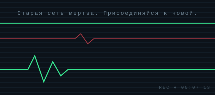

RETICULUM
Кроличья нора в распределенную сеть
Чтобы попасть в сеть, нужно заполнить анкету: так мы решаем, можно ли тебе доверять.
Кто мы
«RETICULUM» — альтернатива глобальной сети, для подключения можно использовать: интернет, пейджер, LoRa и радио на основе стержня от карандаша
Зачем эта анкета
Анкета нужна, чтобы в случае возникновения вопросов, мы могли обратится к вам по вашему ID
В сети запрещено:
- Использование читов и запрещенных дек
- Использование спреeв эротического содержания
- Оскорбление других участников сети
- Обман администрации